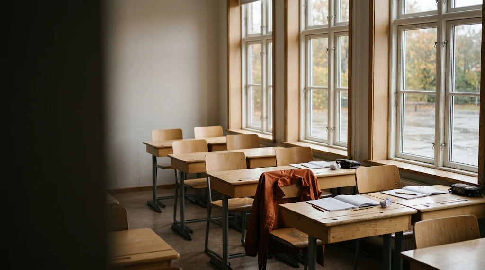
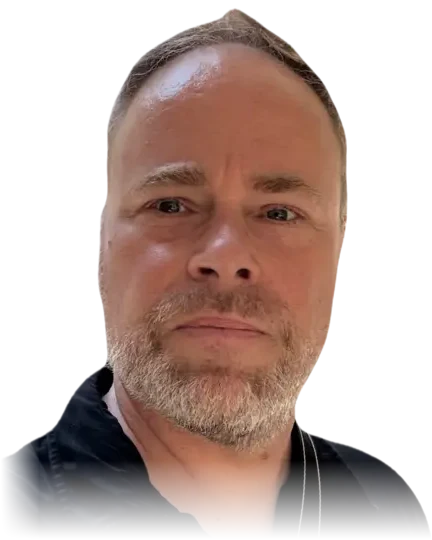

Hvorfor findes Næste Skridt?
Vi hjælper forældre, skoler og kommuner med at finde ud af, hvad der egentlig er brug for – og få det til at ske i hverdagen.
Mød Anne og Christian
Hvem er vi?

Anne Kirk Poulsen
Anne har mere end 30 års erfaring fra skoleverdenen og har arbejdet som lærer, vice- og skoleleder og chefkonsulent på kommunalt niveau. Hun har gennem årene beskæftiget sig indgående med skoleudvikling, ledelse, inklusion, specialundervisning og tværfagligt samarbejde. Hun er uddannet lærer og har videreuddannet sig inden for skoleudvikling, ledelse og coaching.
Anne er optaget af mennesker, relationer og udvikling og tror på, at de bedste løsninger opstår gennem tillid, nysgerrighed og åben dialog. Hun har blik for både de store strategiske linjer og den virkelighed, hvor beslutningerne skal fungere. For hende er det vigtigt at møde mennesker med respekt og skabe rum for nye perspektiver og muligheder.

Christian Brendholdt
Christian er uddannet meritlærer med en baggrund som cand.mag. og har desuden uddannelse inden for ledelse, vejledning og facilitering. Han har flere års erfaring med skoleledelse og pædagogisk udvikling, herunder organisering og drift af ressource- og læringscentre, tværfagligt samarbejde og visitationsprocesser. Siden 2023 har han haft ansvar for udvikling, kapacitetsopbygning og drift af Nest-klasser.
Christian er engageret og løsningsorienteret med stærke relationelle kompetencer. Han har blik for både mennesker og organisation og tror på, at gode resultater skabes gennem involvering, tydelig retning og et stærkt fagligt fællesskab. Han møder opgaver og mennesker med nysgerrighed og et ønske om at finde løsninger, der gør en reel forskel i praksis.
Viden gør ikke forskellen af sig selv.
Det gør det, vi gør med den. Der findes allerede masser af viden, forskning, erfaring og gode intentioner.
Skolen står ikke stille.
Børn og unges behov forandrer sig. Samfundet forandrer sig. Kravene til skolen forandrer sig. Og samtidig skal forældre, lærere, pædagoger og ledere få hverdagen til at fungere.
Nogle gange er udfordringen ikke, at man ikke ved, hvad der skal gøres. Udfordringen er, at man ikke er blevet helt skarp på, hvad der er den egentlige udfordring, hvor man skal begynde, eller hvordan man får en forandring til at leve i praksis.
Det er dér, Næste Skridt kommer ind. Vi hjælper forældre, skoler og kommuner med at forstå deres virkelighed, finde retning og tage de skridt, der faktisk gør en forskel.
Vores opgave er at finde det næste rigtige skridt sammen med jer – og få det til at ske.
Vi arbejder med tre niveauer
Forældre
Når jeres barn ikke trives fagligt, socialt eller følelsesmæssigt, og I har brug for hjælp til at finde vej i det kommunale system.
Læs om hjælp til forældreSkolen
Når en skole kan mærke, at noget ikke fungerer, men har brug for hjælp til at forstå hvorfor, eller når lederne står med ansvaret, men ikke nødvendigvis har tiden eller muligheden for selv at træde et skridt tilbage og se på helheden.
Læs om ydelser til skolerKommunen
Når der er brug for at skabe bedre forbindelse mellem det, man beslutter centralt, og det der faktisk sker på skolerne.
Læs om ydelser til kommuner
Sådan arbejder vi
Vi tror på den rigtige løsning til den virkelighed, den skal fungere i. Derfor starter vi med at lytte.
Vi kommer tæt på virkeligheden
Vi tror ikke på løsninger, der bliver til på et møde langt væk fra hverdagen. Vi vil se, høre og forstå den hverdag, det handler om.
Vi spørger, før vi svarer
Vi er nysgerrige på, hvad der faktisk sker hos jer, før vi foreslår noget.
Vi gør det komplekse enkelt
Det skal være muligt at se, hvad man konkret kan gøre, også når udfordringerne er komplekse.
Vi arbejder sammen med jer
Udviklingen sker sammen med dem, der skal få den til at fungere i hverdagen.
Vi bliver, til det kan mærkes
Vi følger med ud i praksis og måler vores arbejde på, hvad der sker bagefter.
To skoler med den samme udfordring kan godt ende med to forskellige løsninger, og det er helt bevidst.
Lad os tage en snak.
Ring eller skriv, så finder vi et tidspunkt.